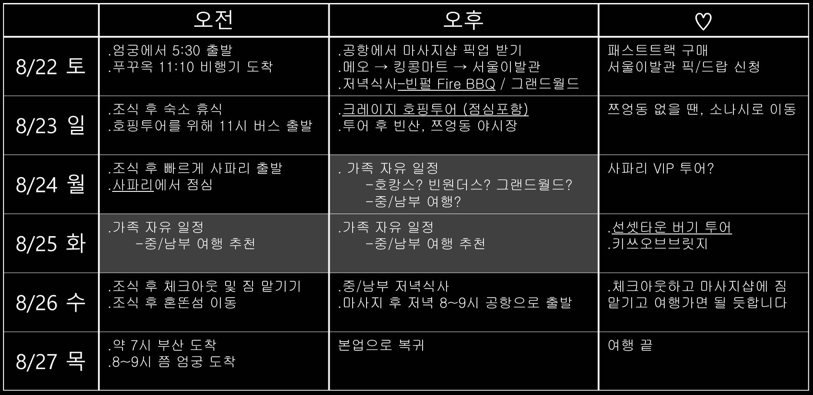

※ 8/24 월요일 오후부터 8/25 하루는 가족 자유 일정입니다!
※ 엄궁에서 5시 30분에는 출발해야할 것 같아요
※ 여행 출발 준비물
- 여권 / 충전기 / 보조배터리 / 상비약 등 개인 물품
- 필터 샤워기
(기본적으로 상수도 물이 더러워서 필수라고 하네요!)
- 멀티탭
(전기 코드는 동일해서 돼지코는 필요 없는데, 필요하신 분은 멀티탭 정도 준비해가면 좋을 것 같아요)
- 그 외 레시가드와 아쿠아슈즈 그리고 썬크림 넉넉히 준비하시면 좋을 것 같습니다
◈ 공항 → 메오키친 식사(12시 예약 예정) → 킹콩마트 쇼핑 → 서울이발관 마사지(2시~2시30분 예약 예정) → 빈펄 원더월드
- 입국할 때, 건강상태질문서/입국신고서를 모바일로 미리 작성 후 제공되는 QR을 스크린샷 해두면 패스트트랙 됩니다 ㅎㅎ
- 저희는 패스트트랙 예약할거라서 빠르게 공항에서 빠져나올 수 있을 듯해요
- 서울이발관에서 저희를 공항 픽업 후, 마사지 받은 후에는 빈펄까지 샌딩해주기로 했습니다
- 저녁식사는 Fire BBQ 미리 예약을 할 계획입니다!
- 킹콩 마트 들려서 물이나 술 등, 숙소에서 먹을 가벼운 주전부리를 구매해서 숙소로 가면 좋을 것 같아요
- (물이 안맞아서 배탈나는 아이나 어른들도 간혹 있다더라구여, 그래서 한국에서 챙겨가는 사람도 있어요)
◈ 숙소 → 킹콩마트 → 호핑투어 → 빈산 → 쯔엉동 야시장 → 마사지 → 숙소
- 크레이지 호핑 투어 일정입니다
- 오전에 조식 호로록하고 빈펄 버스를 타고 킹콩 마트로 가서 12시 쯤 호핑 투어 업체에서 저희를 픽업할 예정이에요
- 호핑투어에, 한국인 가이드, 점심 식사, 맥주, 음료, 스노클링 장비, 멀미약 등 구비되어 있습니다.
- 저녁 6시 쯤 호핑 투어 마치고 다시 중부로 와서, 빈산(해산물 레스토랑), 쯔엉동 야시장, 마사지 후 복귀할 계획입니다
- (피곤하다면 바로 버스타고 숙소로 와서 룸서비스 식사하고 그랜드월드 가서 마사지 받아도 좋아요)
- 시내에 있을 땐, 기념품 판매하는 '킹콩마트'를 들려볼 생각입니다
※ 호핑투어 준비물
- 큰 수건.
(레시가드를 입고 있더라도 추울 수 있어서 애들 덮어 줄 타올이 있어야할 듯 해요. 호텔 비치타올 가져가면 될 듯?)
- 출발 복장은 레시가드, 그리고 갈아 입을 옷 한 벌
- 아쿠아슈즈, 핸드폰 방수팩(?)
- 방수가방
(젖은 수건&옷 넣을 가방)
- 개인 당 매너 팁 5만동 or 2달러
(안주고 싶은데 거의 뭐 강제인 듯 합니다ㅠ)
- 넉넉한 썬크림
◈ 숙소 → 사파리 → 숙소 → 자유 일정
- 사파리 투어 일정입니다
- 오전에 조식 호로록하고 빈펄 버스를 타고 사파리로 이동합니다
- 저희는 단체로 사파리를 돌아 다니며 구경할 계획입니다.
- (혹시 vip 투어가 혹 땡긴다면, 8시 쯤 일찍 가서 줄을 서야 합니다!)
- 점심 식사는 사파리 안 레스토랑에서 가능합니다
- 점심 쯤 사파리 구경이 끝나면, 가족 자유 여행 입니다.
- 오후에 편안하게 호캉스 좋고, 빈원더스도 좋고, 그랜드월드 구경가서 놀다와도 좋고, 중/남부 가고 싶은 가족은 다녀오셔도 좋고~
- 그랜드월드가 인접해 있어서 언제든 가서 먹을 수도 있고, 룸서비스도 괜찮은 편이라, 때마다 의논하면 될 것 같아요
※ 사파리 투어 준비물
- 넓은 모자 또는 양산
(햇빛에 힘들 수 있어유)
- 긴팔/쿨토시(?)
(사파리 가서 쪄 죽을 뻔 했다는 사람이 많더라구여)
- 모기 기피제
(아무래도 위치가 산이라서 필요하다는 사람이 많아요)
- 약간의 현금
(먹이주기 체험을 위함)
※ 만약, 빈원더스를 가게 될 때, 투어 준비물
- 큰 수건.
(이것도 호텔 비치타올 가져가면 될 듯 합니다)
- 출발 복장은 레시가드, 그리고 갈아 입을 옷 한 벌
- 아쿠아슈즈, 핸드폰 방수팩(?)
- 방수가방
(젖은 수건&옷 넣을 가방)
- 현금
(락커룸 이용 또는 간식 등)
- 넉넉한 썬크림
※ 가족 자유 일정
- 호캉스도 좋고, 가까운 빈원더스 가보는 것도 좋구여, 관광 여행이 필요하다면 푸꾸옥 남부 여행 추천합니다
- 남부에는 선셋타운 버기투어, 심포니 쑈, 키쓰브릿지쑈 등 남부 구경 거리가 많아서 추천해요!!
- 여행 중에 얘기 나눠서, 같이 다니든, 따로 다니든 하면 될 듯 합니다
※ 숙소 → 중/남부 마사지 샵 또는 짐 보관 서비스 업체에 짐 맡기기 → 혼똔섬 → 중/남부 식사 → 마사지 → 공항
- 체크 아웃 및 복귀 일정입니다.
- 조식드시고 일찍 체크 아웃하고, 마사지 업체나, 짐 보관 서비스 업체에 짐을 맡기고 혼똔섬으로 이동합니다
- 혼똔섬 즐긴 후 저녁식사 및 마사지 받고 복귀를 위해 공항으로 갑니다.
※ 혼똔섬을 가게 될 때, 투어 준비물
- 큰 수건
(워터파크에서 대여 가능하다네요!)
- 출발 복장은 레시가드, 그리고 갈아 입을 옷 한 벌
- 아쿠아슈즈, 핸드폰 방수팩(?)
- 방수가방
(젖은 수건&옷 넣을 가방)
- 현금
(락커룸 이용 또는 간식 등)
- 넉넉한 썬크림
- 아침 7시 안되어서 김해 공항에 도착합니다.
- 별 일 없이 움직이면 8~9시 쯤에는 엄궁 각자 집에 도착합니다
- 피곤하지만 바로 본업으로 복귀!!
▷ 엄친 가족들 푸꾸옥 여행 끝 ◁